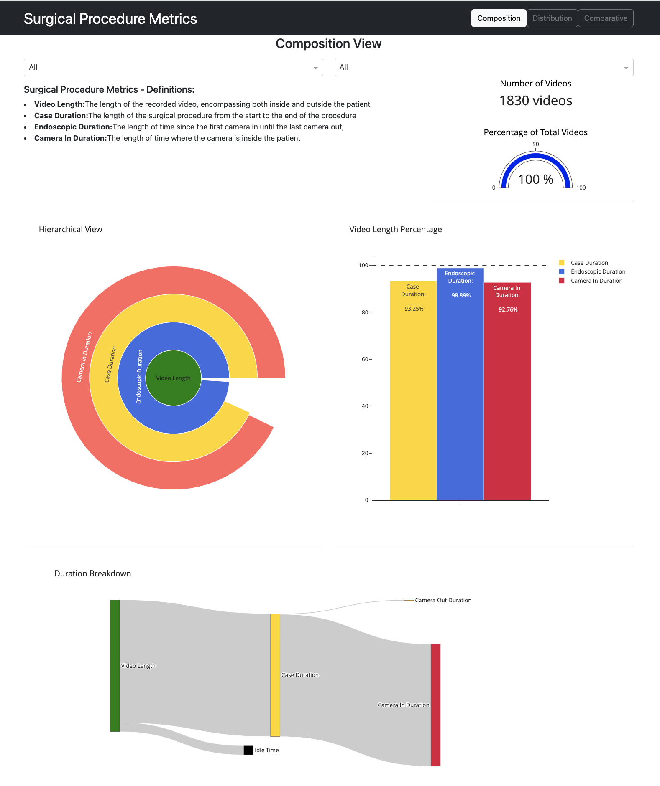
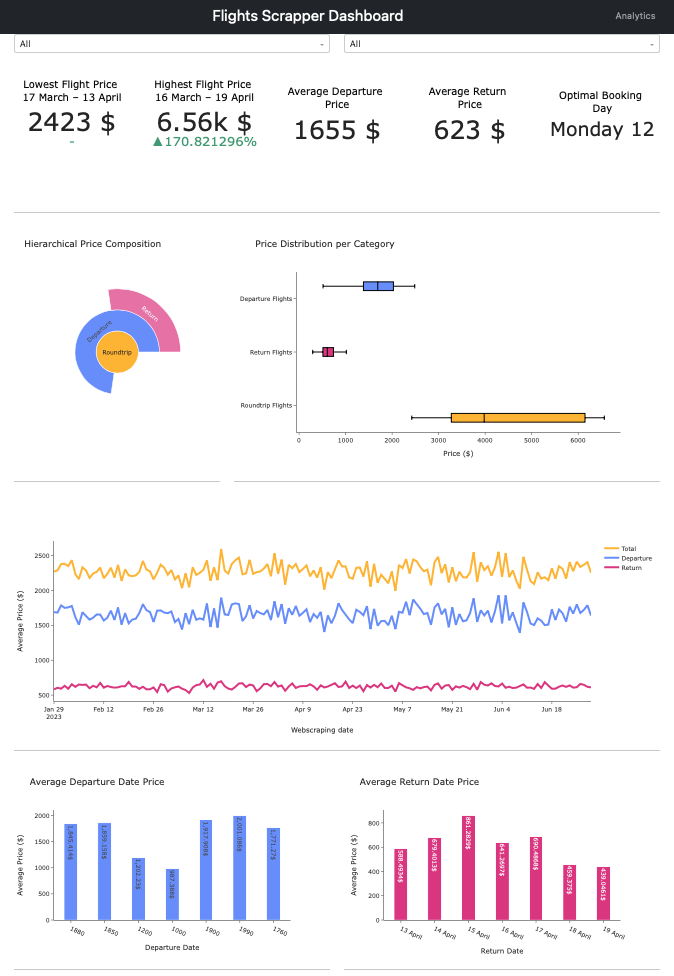
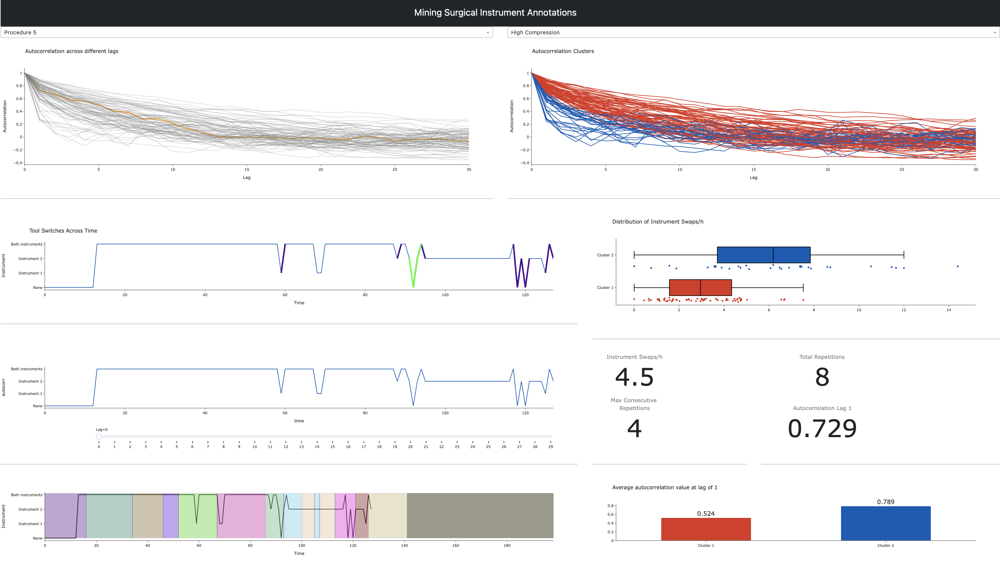
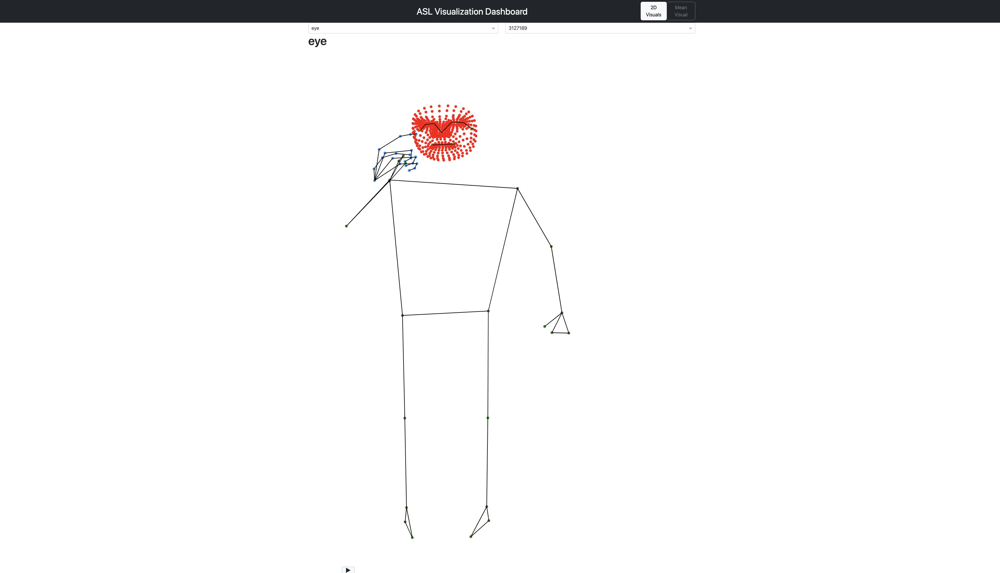
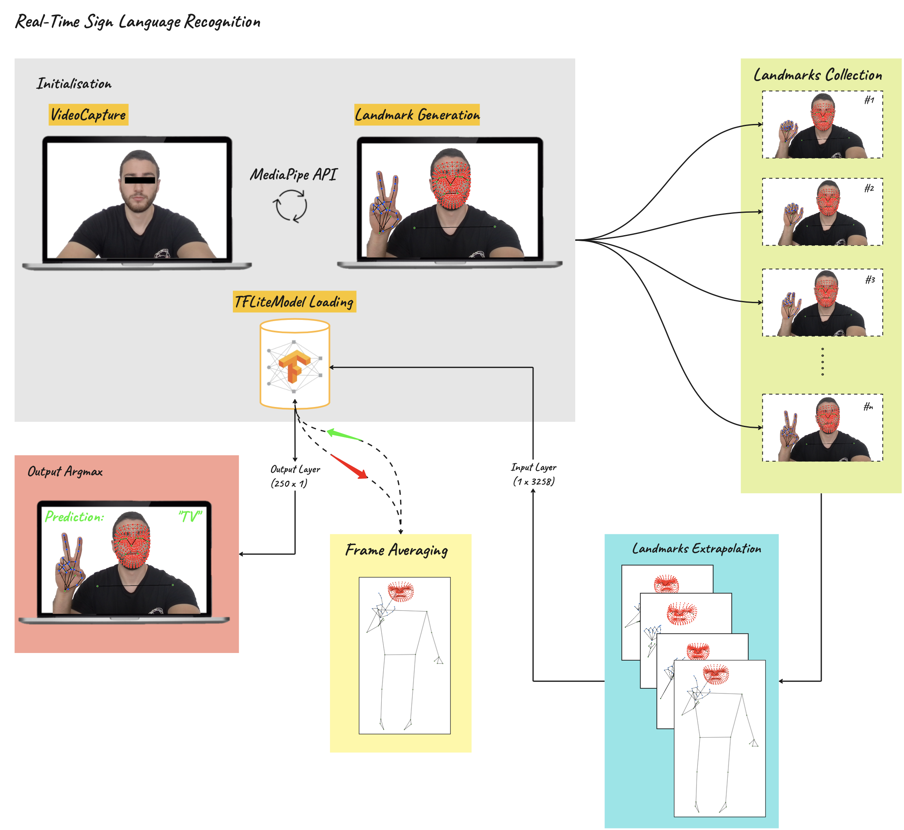

Previous Work
Interactive Dashboards
Below are links to some of the interactive dashboards I have created in the past year. Please note that each dashboard was designed and implemented from scratch using Python and was deployed online. Corresponding links to the code base for each repository are also provided. (For an optimal UI and format, Google Chrome is recommended).
Surgical Procedure Metrics:
This dashboard offers a comprehensive view designed to compare and analyze various definitions of surgical procedure durations. Its primary objective is to standardize and clarify the different time metrics used in surgical practices, ensuring a consistent understanding that can lead to enhanced patient care. The dashboard comprises three sections: a composition page, a comparative page, and a distribution page. These sections delve into analyzing each definition by hospital and surgeon. Please note that all data has been anonymized to maintain confidentiality.

Flights Scraper Analytics:
This open-source dashboard provides a comprehensive view into flight prices, specifically from United Airlines. With its user-friendly interface, the dashboard transforms raw flight data into captivating visuals and insightful charts, enabling users to discern hidden trends and gain a deeper understanding of the airline industry’s dynamics. The data is sourced using dynamic web scraping with Python’s beautiful soup and selenium. This method allows for the automated tracking of flight price fluctuations, ensuring the dashboard remains updated with the latest trends. Note that the data presented is notional in this instance, primarily for aesthetic purposes and to showcase the dashboard’s capabilities.
How to use: Select a specific depart date (left side) and return date (right side) to narrow the search, or leave as All

Mining Surgical Instrument Annotations:
This repository centers on the in-depth analysis of machine learning-labeled surgical instrument annotations that we received for various surgeries. Our primary objective is to employ data mining techniques to unearth patterns within this data, aiming to derive meaningful insights. The developed dashboard delves into individual surgeries, showcasing plots for each alongside their respective autocorrelation plots. These autocorrelation plots were subjected to k-means clustering to shed light on the underlying patterns and trends in instrument annotations across different surgical procedures. Note that the data presented is notional in this instance, primarily for aesthetic and confidentiality purposes. GitHub Repository How to use: Since the application is deployed on a free subscription, this dashboard may take some time to run due to the heavy operations running in the background. Otherwise the GitHub link provides a static view of the dashboard. 
American Sign Language - Medipiape - Dashboard:
As part of the Google Isolated Sign Language Recognition Kaggle competition, which seeks to build an AI model that recognize ASL, I built this interactive dashboard that delves into ASL landmarks within a 2D space. Users can navigate through diverse ASL categories and IDs, honing in on specific landmarks to discern the hand gestures and movements tied to particular signs. This dashboard not only serves as an educational resource but also as a foundation for the development and refinement of ASL recognition systems.
How to use: Select the Sign you wish to visualize —> select the sequence id from the dropdown options —> press Play ▶

if interested, below is the strategy used to deploy and build my model for the competition, uing a TensorFlow Lite model to perform real-time American Sign Language (ASL) recognition from your webcam video: 